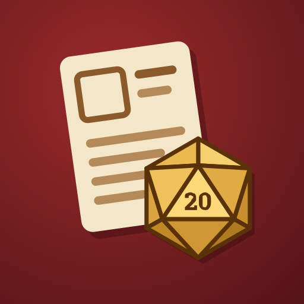

Archivio di schede personaggio per giochi di ruolo 5e, con cronologia delle versioni e sincronizzazione facoltativa su Google Drive.
Informativa sulla privacy · Privacy Policy
Codice sorgente su GitHub